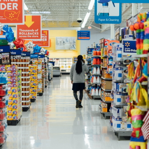
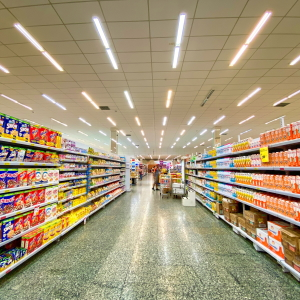
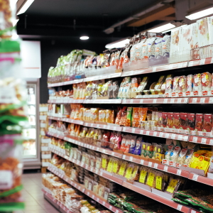

Taniti has two supermarkets, two smaller grocery stores, and one convenience store that is open 24 hours a day.

Walter's Supermarket
Check out Walter's super market for all of your super needs.
- Monday through Friday 8am to 8pm
- Saturday 9am to 6pm
- Sunday Closed

Taniti Super
Taniti super is the local super market. Here you can find all of Taniti's favorite items.
- Monday through Thursday 8am to 8pm
- Friday Closed
- Saturday and Sunday 9am to 6pm

Kim's Grocery
Get a bird's eye view of the beautiful island of Taniti. Our helicopter tours take around the whole island so you can take it all in.
- Monday through Friday 9am to 8pm
- Saturday and Sunday Closed